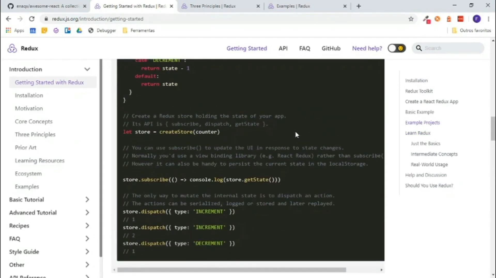

Redux é uma biblioteca para armazenamento de estados de aplicações JavaScript, criado por Dan Abramov. Ele nasceu através de uma implementação do Flux, uma arquitetura criada pelo Facebook para contribuir com as aplicações de User Interface, utilizando o conceito de fluxo de dados unidirecional. Quando desenvolvemos aplicações utilizando Javascript, sempre temos que lidar com o gerenciamento de estado. O Redux veio para suprir essa necessidade de simplificar o controle dos estados de uma aplicação. Compartilhar estados entre vários componentes diferentes se torna uma coisa muito fácil quando o utilizamos.
Ele basicamente tira a responsabilidade de cada um dos componentes de armazenar os estados, deixando tudo isso centralizado, sendo utilizado ao mesmo tempo por todos os componentes de forma compartilhada. Ele também roda em diferentes ambientes como servidor, cliente e nativo.
Fazendo o uso do Redux todos esses estados ficarão armazenados em uma árvore de objetos através do store. Para que isso aconteça, o Redux utiliza 3 recursos:
O fluxo geralmente funciona da seguinte forma: um componente gera uma interação através de um clique dado pelo usuário na interface - por exemplo, assim, um action creator é acionado e dispara uma ação para o store. Essa ação chega até um reducer que irá processar e fazer a alteração do estado no store. Assim um novo estado será disponibilizado para o componente.
Também é importante saber que o Redux tem 3 princípios, sendo:
Por ser uma biblioteca o Redux pode até ser utilizado sozinho, mas ele é normalmente implementado em um conjunto de outras libs ou frameworks JavaScript (Ember, Vue, Angular…). Mas o comum mesmo, que você até já deve ter visto, é vê-lo em funcionamento com o React. É muito comum ver projetos e exemplos de React com Redux juntos, mas é bom deixar claro que o Redux não depende do React.
